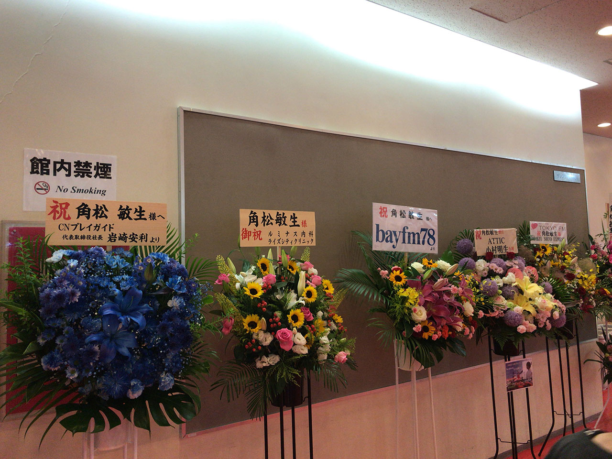
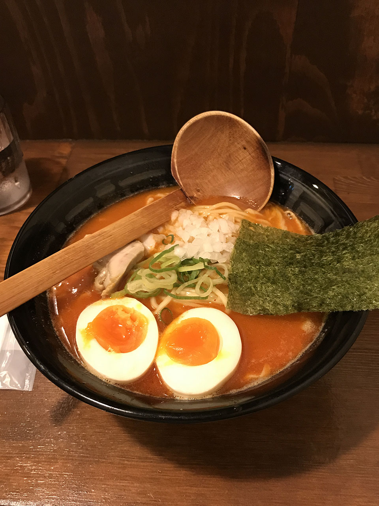
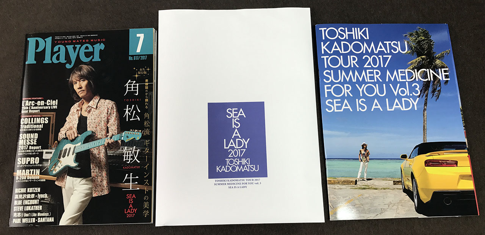

角松敏生ライブに行った
もう一ヶ月近く前になるのか…。時間の流れが早い…。
2017年6月30日、中野サンプラザで行われた角松敏生のライブに行ってきた。今年5月に発売された「Sea Is A Lady 2017」のライブだ。
Sea Is A Lady はオリジナル版から大好きで、ひととおりギターをコピーした。リメイク版である Sea Is A Lady 2017 ではレスポールが導入されたのと、ドラムの山本真央樹 (山本恭司の息子さん！) がバカテクだったので、生で一聴したいと思いライブに行ってきた。

ライブの感想
チケットを買うのが遅くて、中野サンプラザの2階席のほとんど最後列になってしまったが、逆に全体が見えてゆったり聴けた。
Summer 4 Rhythm や Incarnatio からの楽曲もいくつかやっていて、夏らしいライブでとても良かった。
The Moment からゴスペルの曲も披露されて、原曲を聴いてた時はあまりピンと来てなかったのだが、生で聴いて圧倒された。いい曲ですね。笑
アンコールの Take You To The Sky High ではお馴染み紙飛行機も飛びまくってて最高だった。
終わったのが22時過ぎていたので、中野でラーメン食べて帰りました。w

ツアーパンフは… (笑)
普段ほとんどライブに足を運ばない人間なので、記念にツアーパンフを買った。3500円とかかなり高かった。
買ってみてやっぱりというかなんというか、ほとんど角松の写真集状態。w これはどうなんだ…w

↑Player も買った。
セットリスト
ほとんどずっとギターを抱えていたので、記憶ベースで使用機材を書いてみる。
- Way To The Shore … 青ストラト (Moon のシグネチャモデル)
- Sea Line
- Night Sight Of Port Island
- Aijin
- (MC)
- Sea Side Love Affair
- Sunset Of Micro Beach … YAMAHA のサイレントギターかな？使ってた
- Lovin' You … 金レスポに交換・ボリューム奏法
- A Widow On The Shore … 青ストラト
- アマヌサの海
- (MC)
- Tom Scott - Street Beat … バーストレスポ
- Mid-Town … 未音源化曲
- 52nd Street … 金レスポ
- (MC)
- Get Back To The Love … 青ストラト
- Summer Babe
- Beam
- All'n All
- Mid Summer Drivin'
- (アンコール)
- (MC)
- Oshi-Tao-Shitai … バーストレスポ
- (アンコール)
- Parasail … 青ストラト
- Take You To The Sky High
この後にもう1回アンコールで
- IZUMO
- 浜辺の歌
をやった、という情報もあるのだけど、少なくとも自分は抜けてしまったので分からない。
角松本人が言ってたけど、あと数年でちゃんちゃんこ着る年齢だ、というのが、自分の親もそうだなぁ…とか思って途端に焦り出したりしていた。w